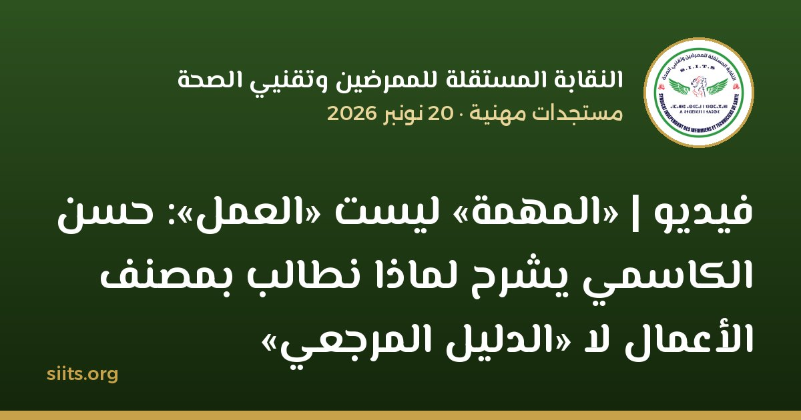

فيديو | «المهمة» ليست «العمل»: حسن الكاسمي يشرح لماذا نطالب بمصنف الأعمال لا «الدليل المرجعي»

في مداخلة له، وضّح الأخ حسن الكاسمي، عضو المكتب الوطني والكاتب الجهوي للنقابة المستقلة للممرضين وتقنيي الصحة بجهة الشرق، الفرق الجوهري بين «المهمة» و«العمل»، وهو الفرق نفسه الذي يفصل بين ما تطالب به النقابة، أي «مصنف الأعمال»، وما تريده الوزارة، أي «الدليل المرجعي» للوظائف والكفاءات.
• المهمة إطار عام مفتوح: ضرب الأخ الكاسمي مثالاً بموظف يُكلَّف من وجدة بمهمة في الدار البيضاء؛ يُقال له «ستسافر إلى الدار البيضاء»، دون أن تُحدَّد له وسيلة النقل، ولا ما سيقوم به بالضبط هناك. فالمهمة الواحدة تحتمل أعمالاً كثيرة غير معلومة سلفاً.
• لغة المهام لا تحمي أحداً: حين نعود إلى المرسوم الخاص بالممرضين، نجد عبارات من قبيل «المساهمة في إعداد البرامج الصحية»، وهي صيغة فضفاضة إلى حد أن أحداً قد يقول ساخراً: «أنا أساهم بالدعاء»!
• العمل محدد وقابل للقياس: في المقابل، حين نعود إلى قائمة الأعمال، نجد أعمالاً دقيقة ومعرّفة: الحقنة الوريدية، والحقنة العضلية، والحقنة تحت الجلدية. هذا هو العمل: فعل محدد، بمسؤولية محددة، يمكن تقويمه وحمايته قانونياً.
فالدليل المرجعي الذي تريده الوزارة يصف الوظائف والمهام والكفاءات بلغة عامة، ويبقى أداة لتدبير الموارد البشرية. أما مصنف الأعمال الذي نطالب به، فيحدد بدقة الأعمال التي يحق للممرض وتقني الصحة القيام بها، ويحميه قانونياً أثناء ممارسته، ويبيّن ما له وما عليه.
لذلك، نحن لا نرفض أي أداة لتدبير الموارد البشرية، لكننا نرفض أن تُقدَّم بديلاً عن مصنف الأعمال، ونجدد مطالبتنا بإخراجه دون مزيد من التأخير، صوناً لكرامة الممرض وتقني الصحة وحمايةً لممارسته المهنية.
شاهدوا المداخلة كاملة في الفيديو.
فتح في تطبيق النقابة